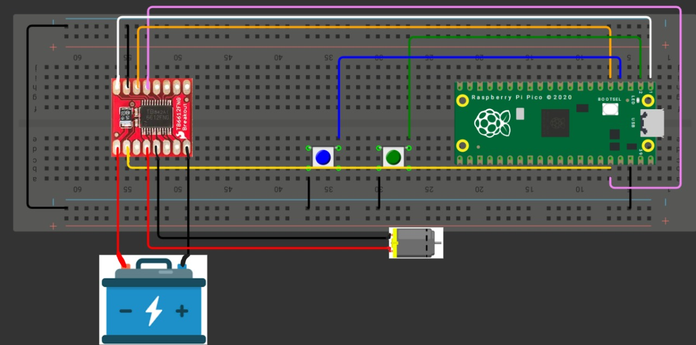
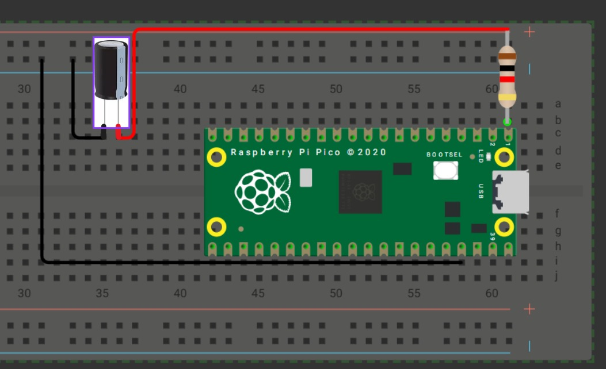
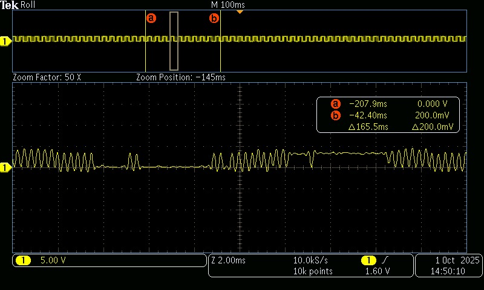
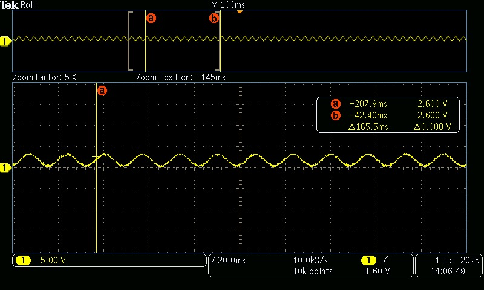

📘 Tarea 7 — PWM
🎵 Tarea 7.1 - Control de Duty Cycle — Motor DC
1) Resumen
- Nombre del subproyecto: Control PWM de motor DC con 3 velocidades
- Autor: Carlos Ernesto Camacho González
- Curso / Asignatura: Sistemas Embebidos
- Fecha: 16/09/2025
- Descripción breve:
- Controlar un motor DC mediante PWM variando el duty cycle.
- Dos botones seleccionan tres velocidades predefinidas: baja, media y alta.
- Se documentan valores de duty, circuito y código.
Nota de seguridad: El microcontrolador no entrega corriente suficiente para un motor. Debe usarse un driver/puente H (p. ej., DRV8833, TB6612FNG o L298N) con fuente para el motor y GND común con el micro.
2) Objetivos
- Comprender cómo el duty cycle del PWM regula la velocidad del motor DC.
- Implementar una interfaz simple con dos botones para seleccionar tres velocidades.
- Configurar correctamente el hardware PWM en RP2350/Pico 2 (frecuencia,
wrap,clkdiv).
3) Conceptos clave
- PWM (Modulación por Ancho de Pulso): controla la tensión media aplicada al motor.
- Frecuencia PWM: se usa 2 kHz. Para evitar zumbido audible
- Duty predefinido:
- Baja ≈ 30%, Media ≈ 60%, Alta ≈ 90%.
4) Código
#include "pico/stdlib.h"
#include "hardware/pwm.h"
#define MOTOR_PWM_PIN 0 // salida PWM al driver (IN1)
#define BTN_UP 1 // subir velocidad
#define BTN_DOWN 2 // bajar velocidad
#define MOTOR_DIR_PIN 3 // dirección (IN2) fija = 1
// Configuración PWM
#define F_PWM_HZ 2000 // 2 kHz
#define TOP 1023 // 10 bits de resolución (0..1023)
#define DEBOUNCE_MS 150
int main(void) {
stdio_init_all();
// PWM en pin MOTOR_PWM_PIN
gpio_set_function(MOTOR_PWM_PIN, GPIO_FUNC_PWM);
// Dirección fija a 1 (un solo sentido)
gpio_init(MOTOR_DIR_PIN);
gpio_set_dir(MOTOR_DIR_PIN, GPIO_OUT);
gpio_put(MOTOR_DIR_PIN, 1);
// Botones con pull-up (activo-bajo)
gpio_init(BTN_UP); gpio_set_dir(BTN_UP, GPIO_IN); gpio_pull_up(BTN_UP);
gpio_init(BTN_DOWN); gpio_set_dir(BTN_DOWN, GPIO_IN); gpio_pull_up(BTN_DOWN);
// Configurar hardware PWM
uint slice = pwm_gpio_to_slice_num(MOTOR_PWM_PIN);
uint chan = pwm_gpio_to_channel(MOTOR_PWM_PIN);
const float f_clk = 125000000.0f; // 125 MHz
const float clkdiv = f_clk / (F_PWM_HZ * (TOP + 1));
pwm_set_clkdiv(slice, clkdiv);
pwm_set_wrap(slice, TOP);
const uint16_t duty_levels[3] = {
(uint16_t)(0.30f * TOP), // Baja
(uint16_t)(0.60f * TOP), // Media
(uint16_t)(0.90f * TOP) // Alta
};
int speed_level = 0;
// Iniciar PWM con velocidad "Baja"
pwm_set_chan_level(slice, chan, duty_levels[speed_level]);
pwm_set_enabled(slice, true);
while (true) {
// BTN_UP: siguiente velocidad
if (!gpio_get(BTN_UP)) {
if (speed_level < 2) speed_level++;
pwm_set_chan_level(slice, chan, duty_levels[speed_level]);
sleep_ms(DEBOUNCE_MS);
// Espera a soltar para evitar autorepetición rápida
while (!gpio_get(BTN_UP)) tight_loop_contents();
}
// BTN_DOWN: velocidad previa
if (!gpio_get(BTN_DOWN)) {
if (speed_level > 0) speed_level--;
pwm_set_chan_level(slice, chan, duty_levels[speed_level]);
sleep_ms(DEBOUNCE_MS);
while (!gpio_get(BTN_DOWN)) tight_loop_contents();
}
}
}
5) Video de demostracion
video
6) Esquemático de conexión

Figura 1.
7) Resultados y conclusiones
-
Con 30/60/90% se observan claramente tres regímenes de velocidad.
-
Antirrebote bloqueante (150 ms).
-
Usar driver dedicado y GND común garantiza estabilidad y protege al microcontrolador.
🎵 Tarea 7.2 — Control de Frecuencia: Canción con Buzzer
1) Resumen
- Entregable: Programar un buzzer piezoeléctrico para reproducir una melodía reconocible (intro de Pac-Man).
- Técnica: Variar la frecuencia del PWM para cada nota; duty = 50%.
- Documentar: Tabla con notas/frecuencias/duración y evidencia (audio/video).
- Recomendación: Los buzzer piezo suenan mejor ~532 Hz–4 kHz. Se usan notas en una octava que cae en ese rango.
2) Código
#include "pico/stdlib.h"
#include "hardware/pwm.h"
#define BUZZER_PIN 0
#define TOP 1023 // Resolución (10 bits)
#define TEMPO 190 // Tempo rápido
// Duraciones de nota
#define NEGRA (60000 / TEMPO)
#define CORCHEA (NEGRA / 2)
#define SEMICORCHEA (NEGRA / 4)
int main() {
stdio_init_all();
gpio_set_function(BUZZER_PIN, GPIO_FUNC_PWM);
uint slice = pwm_gpio_to_slice_num(BUZZER_PIN);
uint chan = pwm_gpio_to_channel(BUZZER_PIN);
pwm_set_wrap(slice, TOP);
pwm_set_chan_level(slice, chan, 0); // empezar en silencio
pwm_set_enabled(slice, true);
// Pac-Man (intro + intermisión)
const float frecuencias[] = {
// Intro
987.77, 1479.98, 1244.51, 987.77, 1479.98, 1244.51, 0,
1046.50, 1567.98, 1318.51, 1046.50, 1567.98, 1318.51, 0,
987.77, 880.00, 783.99, 698.46, 622.25, 587.33, 0,
// Intermisión
783.99, 0, 880.00, 0, 987.77, 0, 783.99,
987.77, 0, 1046.50, 0, 1174.66, 0, 987.77,
1174.66, 0, 1244.51, 0, 1318.51, 0, 1174.66
};
const int duraciones[] = {
// Intro
CORCHEA, CORCHEA, CORCHEA, CORCHEA, CORCHEA, CORCHEA, CORCHEA,
CORCHEA, CORCHEA, CORCHEA, CORCHEA, CORCHEA, CORCHEA, CORCHEA,
SEMICORCHEA, SEMICORCHEA, SEMICORCHEA, SEMICORCHEA, SEMICORCHEA, NEGRA, NEGRA,
// Intermisión
CORCHEA, SEMICORCHEA, CORCHEA, SEMICORCHEA, CORCHEA, SEMICORCHEA, NEGRA,
CORCHEA, SEMICORCHEA, CORCHEA, SEMICORCHEA, CORCHEA, SEMICORCHEA, NEGRA,
CORCHEA, SEMICORCHEA, CORCHEA, SEMICORCHEA, CORCHEA, SEMICORCHEA, NEGRA
};
const int num_notas = (int)(sizeof(frecuencias) / sizeof(frecuencias[0]));
while (true) {
for (int i = 0; i < num_notas; i++) {
if (frecuencias[i] > 0.0f) {
// Para RP2350 el sysclk típico es 150 MHz; si usas RP2040 usa 125 MHz
const float f_clk = 150000000.0f;
const float div = f_clk / (frecuencias[i] * (TOP + 1));
pwm_set_clkdiv(slice, div);
pwm_set_chan_level(slice, chan, TOP / 2); // 50% duty
} else {
// silencio (pausa)
pwm_set_chan_level(slice, chan, 0);
}
sleep_ms(duraciones[i]);
}
// Pausa entre repeticiones
pwm_set_chan_level(slice, chan, 0);
sleep_ms(2000);
}
}
3) Tabla de notas usadas (referencia)
| Nota (aprox) | Frec. (Hz) | Comentario |
|---|---|---|
| B5 | 987.77 | Inicio característico |
| F♯6 | 1479.98 | Agudo brillante |
| D♯6 / E♭6 | 1244.51 | |
| C6 | 1046.50 | |
| G6 | 1567.98 | |
| E6 | 1318.51 | |
| A5 | 880.00 | |
| G5 | 783.99 | |
| F5 | 698.46 | |
| D♯5 / E♭5 | 622.25 | |
| D5 | 587.33 | |
| D6 | 1174.66 |
Tip: si escuchas distorsión, sube la frecuencia PWM manteniendo el duty 50%.
4) Evidencias
Video / Audio
5) Esquemático de conexión

Figura 2.
6) Conclusiones (Tarea 7.2)
- La melodía se logra variando la frecuencia del PWM con duty fijo (50%).
- Mantener el rango ~532 Hz–4 kHz asegura buena respuesta del buzzer piezo.
- Ajustar clkdiv en tiempo real permite notas afinadas sin bloquear otros procesos.
🛠️ Tarea 7.3 — Generación de Señales: Senoidal de 60 Hz con PWM + Filtro RC
1) Resumen
- Nombre del proyecto: Señal senoidal con PWM y filtrado RC
- Autor: Carlos Ernesto Camacho González
- Curso / Asignatura: Sistemas Embebidos
- Fecha: 16/09/2025
- Descripción breve:
- Generar una señal sinusoidal de 60 Hz aproximada mediante PWM variando el duty cycle con una tabla seno.
- Filtrar la señal usando un filtro RC pasabajos para obtener una forma senoidal limpia en el osciloscopio.
- Documentar capturas de PWM sin filtrar y señal filtrada.
2) Objetivos
- Implementar una tabla seno para modular el duty cycle del PWM.
- Usar un filtro RC que atenúe las componentes de alta frecuencia y deje pasar los 60 Hz.
- Verificar la señal en osciloscopio antes y después del filtro.
3) Conceptos clave
Señal senoidal con PWM
El microcontrolador genera una onda PWM cuyo duty cycle sigue la forma de una tabla seno. Tras el filtrado RC, se obtiene una onda analógica.
4) Código
#include <stdio.h>
#include <math.h>
#include "pico/stdlib.h"
#include "hardware/pwm.h"
#define SENAL 0 // Pin GPIO de salida
#define TOP 1023 // Resolución del PWM (10 bits)
#define FREQ 60 // Frecuencia de la señal senoidal deseada (Hz)
#define TAMANO_SENO 100 // Número de puntos en la tabla seno
// Tabla seno (se llenará en tiempo de ejecución)
uint16_t TABLA_SENO[TAMANO_SENO];
int main() {
stdio_init_all();
// Llenar tabla seno con valores escalados a [0, TOP]
for (uint8_t i = 0; i < TAMANO_SENO; i++) {
double RAD = (2 * M_PI * i) / TAMANO_SENO;
double VAL = (sin(RAD) + 1.0) / 2.0; // normalizada a 0–1
TABLA_SENO[i] = (uint16_t)(VAL * TOP);
}
// Configurar pin PWM
gpio_set_function(SENAL, GPIO_FUNC_PWM);
uint slice = pwm_gpio_to_slice_num(SENAL);
uint chan = pwm_gpio_to_channel(SENAL);
pwm_set_wrap(slice, TOP);
pwm_set_chan_level(slice, chan, 0);
pwm_set_enabled(slice, true);
// Calcular frecuencia de actualización de la LUT
double RATE = FREQ * TAMANO_SENO; // actualizaciones/segundo
uint32_t delay_us = 1000000.0 / RATE; // periodo en µs
int INDEX = 0;
while (true) {
pwm_set_chan_level(slice, chan, TABLA_SENO[INDEX]);
INDEX++;
if (INDEX >= TAMANO_SENO) INDEX = 0;
sleep_us(delay_us); // Ajusta la frecuencia
}
}
5) Esquemático de conexión

Figura 3.
6) Evidencias
Osciloscopio
- Antes del filtro (PWM): señal rectangular con duty variable.
- Después del filtro RC: onda senoidal de 60 Hz más limpia.

*Figura 4. Señal PWM *

Figura 5. Señal senoidal tras el filtro RC.
7) Resultados y conclusiones
- El PWM con duty modulado por tabla seno reproduce correctamente la forma senoidal.
- El filtro RC atenúa los armónicos de alta frecuencia y deja pasar los 60 Hz.
- Ajustar R y C permite modificar la frecuencia de corte para un mejor compromiso entre limpieza de señal y amplitud.
- Se logró una señal analógica senoidal a partir de un pin digital del microcontrolador.